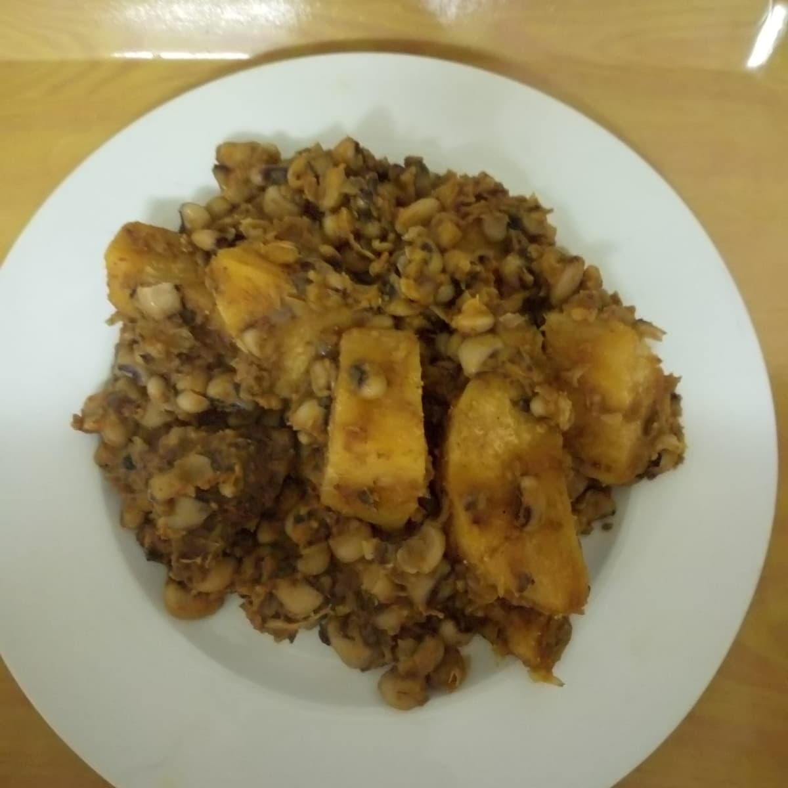

Beans and Yam Pottage

Description
Beans and yam pottage, or stew, is a traditional Nigerian dish. I like to call it a feast in one dish, as it is
delicious and extremely filling. It's also very easy to make. This is my own recipe.
Ingredients
- 1/4 yam tuber, chopped
- 3 cups white beans
- 1/2 cup crayfish, ground
- 2 cubes soy seasoning (I use Knorr brand)
- 1 fish, smoked or dried
- pepper, to taste
- 1/4 kilogram beef, chopped
- 1 onion, sliced
- 1/2 cup palm oil
Steps
- Boil the beans until they are soft. Pour them out into a colander and drain.
- In a pot, steam the meat and fish with salt, pepper, onions and seasoning cubes for 5 minutes.
- Preheat oven to 400 degrees F (200 degrees C).
- Pour 1 cup of water into the pot. Add the ground crayfish and palm oil. Bring to a boil and allow the oil to disperse in
the boiling mixture completely. Taste for salt.
- Throw in the chopped yam. Add the cooked beans. Cover the pot for 10 minutes.
- Serve Hot.